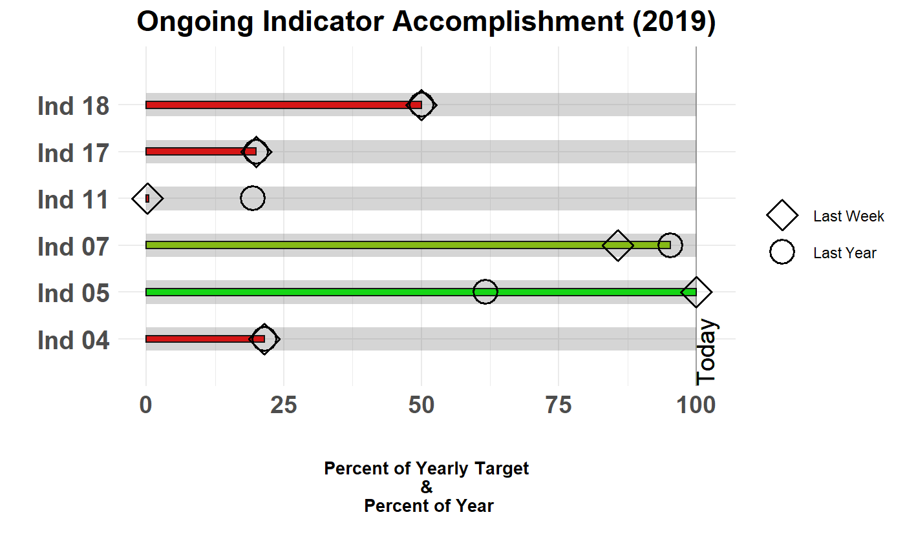

bullet_chart_wide.Rdcreate bullet chart with bars of varying width
bullet_chart_wide(file_name = NULL, sheet_name = "Sheet1", dataframe = NULL, indicator_name = "indicator_name", actual = "actual", actual_lastweek = "actual_lastweek", actual_lastyear = "actual_lastyear", target = "target", for_year = year(Sys.Date()), cal_type = "fis", chart_type = "static", small = FALSE, legend = TRUE, remove_no_targets = FALSE, show_text = FALSE)
| file_name | path of Excel file |
|---|---|
| sheet_name | specify which sheet in Excel file, Default: "Sheet1" |
| dataframe | specify R dataframe input |
| indicator_name | specify the name of the column that has your indicator/KPI names |
| actual | specify the name of the column that has the current value of your indicators/KPIs |
| actual_lastweek | specify the name of the column that has the indicator/KPI value from the previous week |
| actual_lastyear | specify the name of the column that has the indicator/KPI value from the previous year |
| target | specify the name of the column that has the target value for the indicator/KPI |
| for_year | specify the year in which the report is being made, Default: year(Sys.Date()) |
| cal_type | define what calendar you are using. Options are "fis" for fiscal year starting October 1st, "cal" for calendar year starting January 1st, or enter your own custom date in the format "YYYY/MM/DD", Default: fis |
| chart_type | static of interactive (ggiraph) version |
| small | specify whether you want the small version of the plot (TRUE or FALSE), Default: FALSE |
| legend | specify whether you want to show the legend, Default: TRUE |
| remove_no_targets | remove indicators with Targets == NA or 0, Default: FALSE |
| show_text | Show 'Last Week' & 'Last Year' text, when `small = TRUE` or `chart_type = "interactive"` then no text will be shown by default. |
This version conforms more closely with the standard bullet chart design. This function uses different thicknesses for the bars as the benchmarks for previous time points (last week and last year) to further accentuate the difference graphically.
